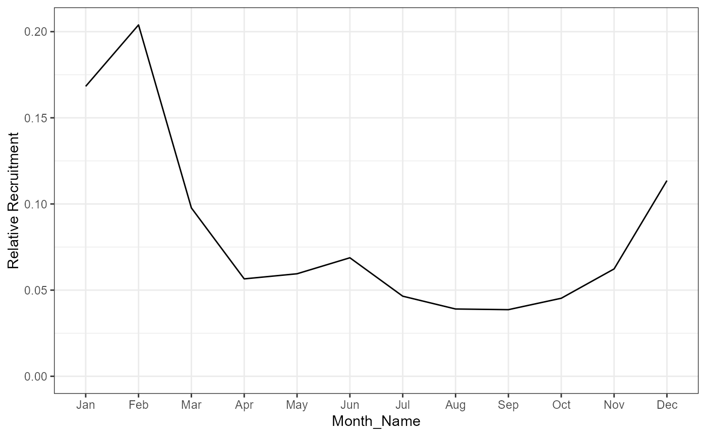

plot_seasonal_rec.RdPlot the predicted seasonal recruitment pattern
plot_seasonal_rec(assess)
get_seasonal_recruitment(assess)An object of class Assess
A list with a data.frame and a ggplot object
get_seasonal_recruitment(): get data.frame of predicted seasonal recruitment
MyData <- Import(Example_Data()[2])
MyAssess <- Assess(MyData)
#> Parameters pass all checks
#> Index, Effort, and Catch detected. Only fitting to Index and Catch. Set `Data$Fit_Effort=1` to fit to Effort as well.
plot_seasonal_rec(MyAssess)
#> $df
#> Month Recruitment Month_Name
#> 1 1 0.16827540 Jan
#> 2 2 0.20391272 Feb
#> 3 3 0.09771463 Mar
#> 4 4 0.05652450 Apr
#> 5 5 0.05948645 May
#> 6 6 0.06876758 Jun
#> 7 7 0.04648122 Jul
#> 8 8 0.03904403 Aug
#> 9 9 0.03865539 Sep
#> 10 10 0.04527575 Oct
#> 11 11 0.06229697 Nov
#> 12 12 0.11356536 Dec
#>
#> $p

#>